Lý thuyết lái xe · Chương 6
Sa hình và xử lý tình huống
Quan sát sơ đồ giao thông, hướng di chuyển của từng xe và chọn thứ tự qua giao lộ trong từng tình huống.
115 câu hỏi, từ câu 486 đến câu 600. Nguồn nội dung · Bộ 600 câu hỏi dùng cho sát hạch lái xe cơ giới đường bộ · Cục CSGT, 2025.
Đi đến nhóm câu hỏi
Câu hỏi và đáp án
Câu 486 Theo hướng mũi tên, xe nào chấp hành đúng quy tắc giao thông?
- Xe khách, xe tải, xe mô tô.
- Xe tải, xe mô tô.
- Chỉ xe con.
Xem đáp án
C. Chỉ xe con.
Câu 487 Theo hướng mũi tên, thứ tự các xe đi như thế nào là đúng quy tắc giao thông?
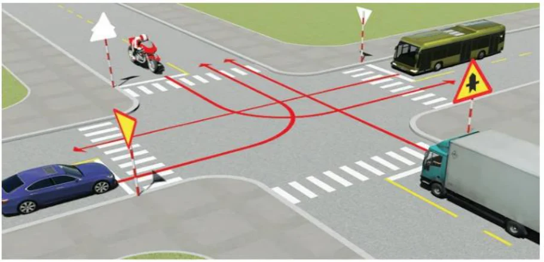
- Xe tải, xe khách, xe con, xe mô tô.
- Xe tải, xe mô tô, xe khách, xe con.
- Xe khách, xe tải, xe con, xe mô tô.
- Xe mô tô, xe khách, xe tải, xe con.
Xem đáp án
B. Xe tải, xe mô tô, xe khách, xe con.
Câu 488 Theo hướng mũi tên, thứ tự các xe đi như thế nào là đúng quy tắc giao thông?
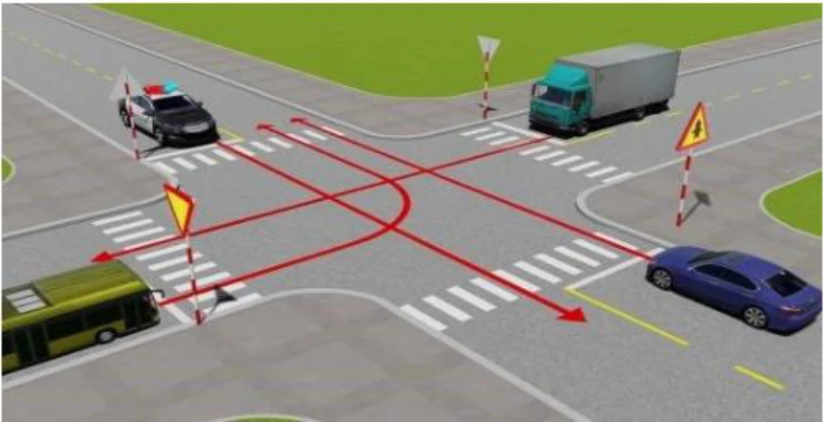
- Xe công an đi làm nhiệm vụ khẩn cấp, xe con, xe tải, xe khách.
- Xe công an đi làm nhiệm vụ khẩn cấp, xe khách, xe con, xe tải.
- Xe công an đi làm nhiệm vụ khẩn cấp, xe tải, xe khách, xe con.
- Xe con, xe công an đi làm nhiệm vụ khẩn cấp, xe tải, xe khách.
Xem đáp án
A. Xe công an đi làm nhiệm vụ khẩn cấp, xe con, xe tải, xe khách.
Câu 489 Theo hướng mũi tên, thứ tự các xe đi như thế nào là đúng quy tắc giao thông?
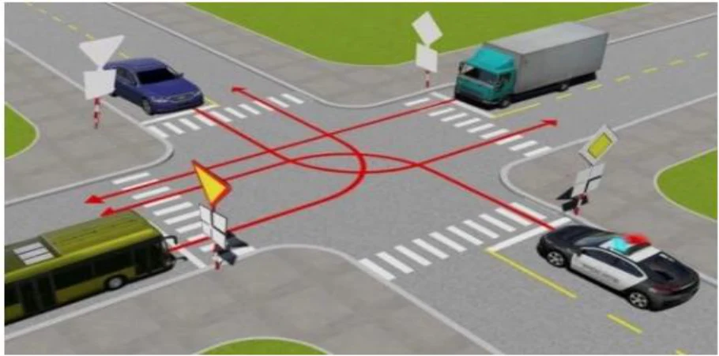
- Xe tải, xe công an đi làm nhiệm vụ khẩn cấp, xe khách, xe con.
- Xe công an đi làm nhiệm vụ khẩn cấp, xe khách, xe con, xe tải.
- Xe công an đi làm nhiệm vụ khẩn cấp, xe con, xe tải, xe khách.
- Xe công an đi làm nhiệm vụ khẩn cấp, xe tải, xe khách, xe con.
Xem đáp án
D. Xe công an đi làm nhiệm vụ khẩn cấp, xe tải, xe khách, xe con.
Câu 490 Theo hướng mũi tên, thứ tự các xe đi như thế nào là đúng quy tắc giao thông?
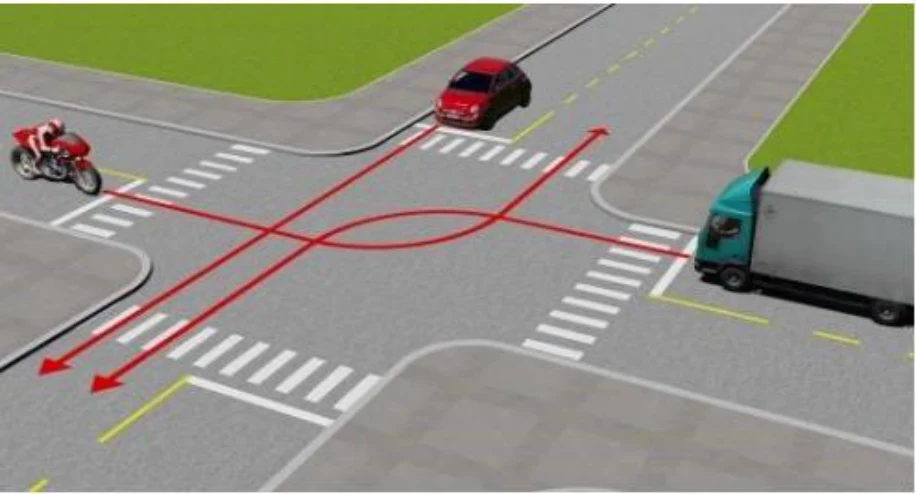
- Xe tải, xe con, xe mô tô.
- Xe con, xe tải, xe mô tô.
- Xe mô tô, xe con, xe tải.
- Xe con, xe mô tô, xe tải.
Xem đáp án
C. Xe mô tô, xe con, xe tải.
Câu 491 Xe nào phải nhường đường trong trường hợp này?
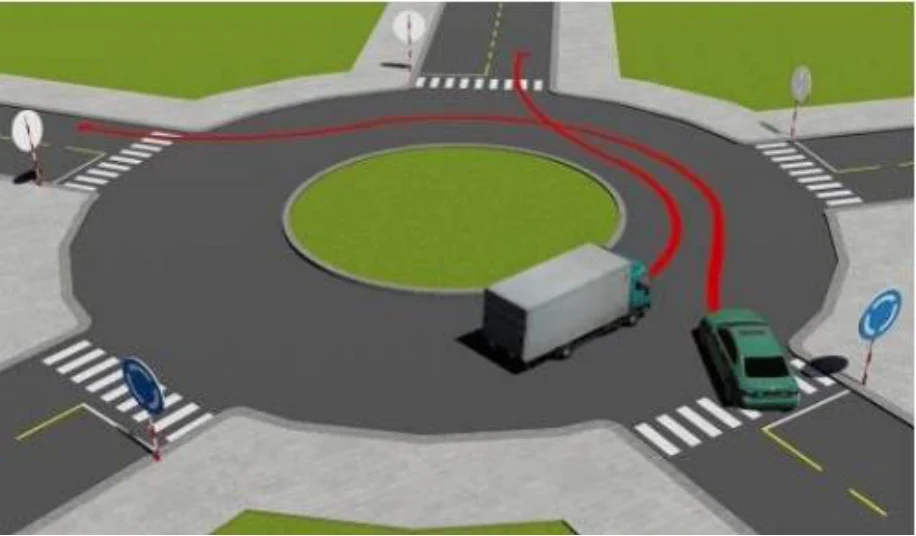
- Xe con.
- Xe tải.
Xem đáp án
A. Xe con.
Câu 492 Trường hợp này xe nào được quyền đi trước?
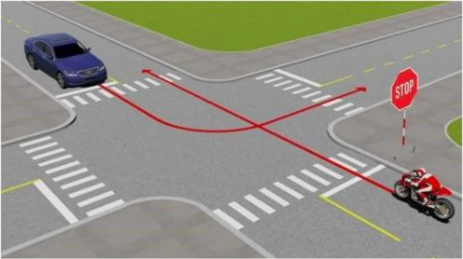
- Xe mô tô.
- Xe con.
Xem đáp án
B. Xe con.
Câu 493 Thứ tự các xe đi như thế nào là đúng quy tắc giao thông?
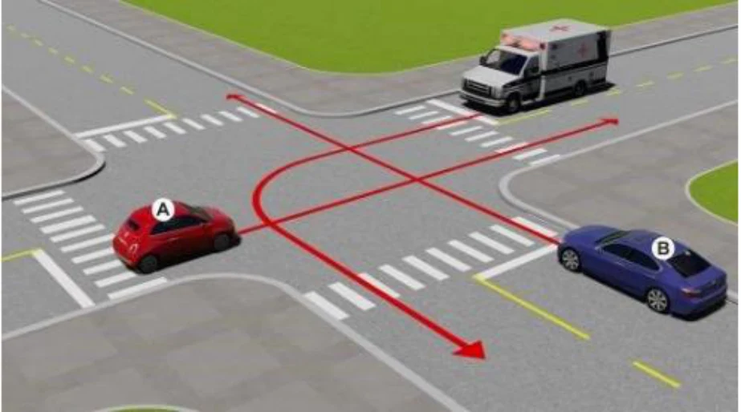
- Xe con (A), xe cứu thương đi làm nhiệm vụ cấp cứu, xe con (B).
- Xe cứu thương đi làm nhiệm vụ cấp cứu, xe con (B), xe con (A).
- Xe con (B), xe con (A), xe cứu thương đi làm nhiệm vụ cấp cứu.
Xem đáp án
A. Xe con (A), xe cứu thương đi làm nhiệm vụ cấp cứu, xe con (B).
Câu 494 Thứ tự các xe đi như thế nào là đúng quy tắc giao thông?
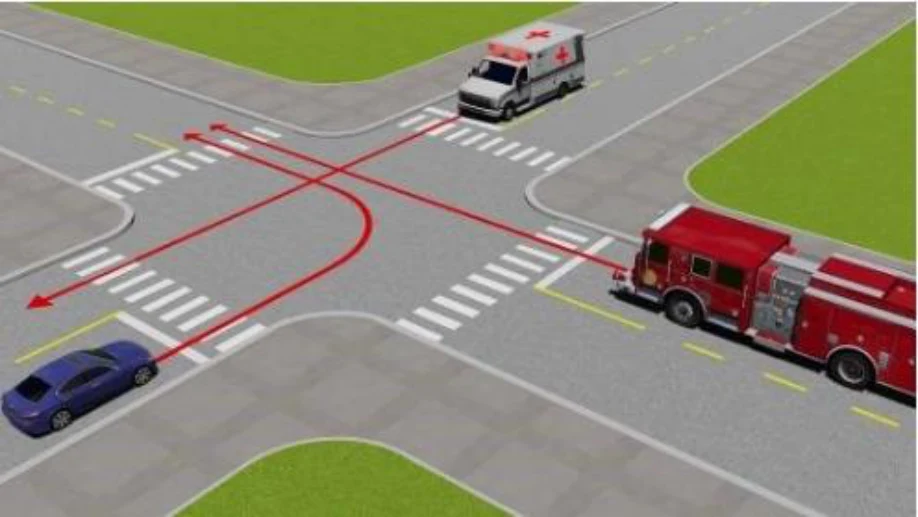
- Xe cứu thương đi làm nhiệm vụ cấp cứu, xe chữa cháy đi làm nhiệm vụ chữa cháy, xe con.
- Xe chữa cháy đi làm nhiệm vụ chữa cháy, xe cứu thương đi làm nhiệm vụ cấp cứu, xe con.
- Xe cứu thương đi làm nhiệm vụ cấp cứu, xe con, xe chữa cháy đi làm nhiệm vụ chữa cháy.
Xem đáp án
B. Xe chữa cháy đi làm nhiệm vụ chữa cháy, xe cứu thương đi làm nhiệm vụ cấp cứu, xe con.
Câu 495 Xe nào được quyền đi trước trong trường hợp này?
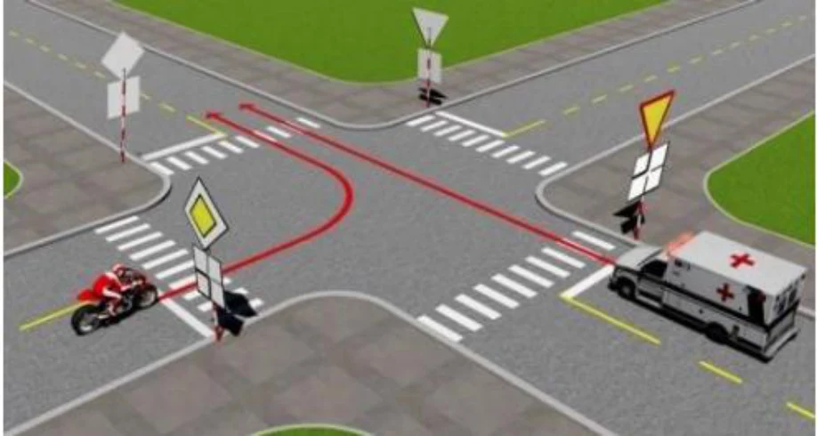
- Xe mô tô.
- Xe cứu thương đi làm nhiệm vụ cấp cứu.
Xem đáp án
B. Xe cứu thương đi làm nhiệm vụ cấp cứu.
Câu 496 Theo hướng mũi tên, xe nào phải nhường đường đi cuối cùng qua nơi giao nhau này?
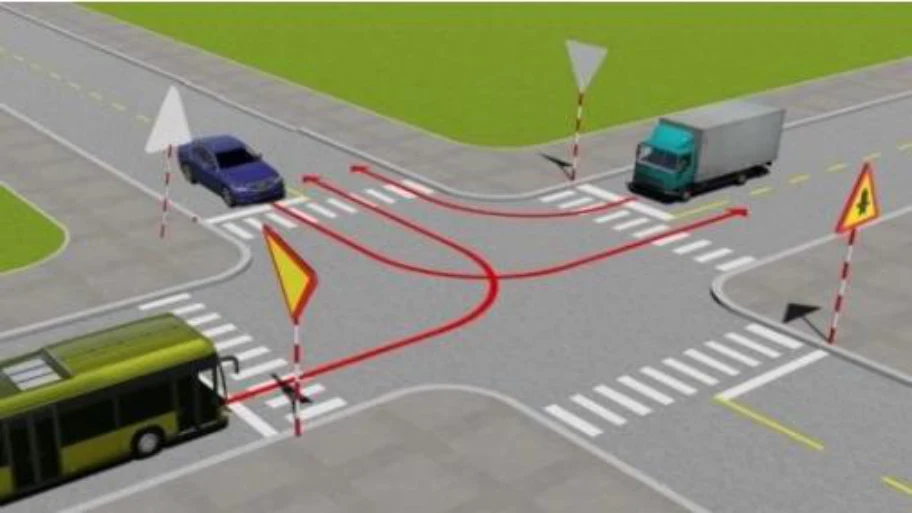
- Xe khách.
- Xe tải.
- Xe con.
Xem đáp án
A. Xe khách.
Câu 497 Theo hướng mũi tên, xe nào phải nhường đường là đúng quy tắc giao thông?
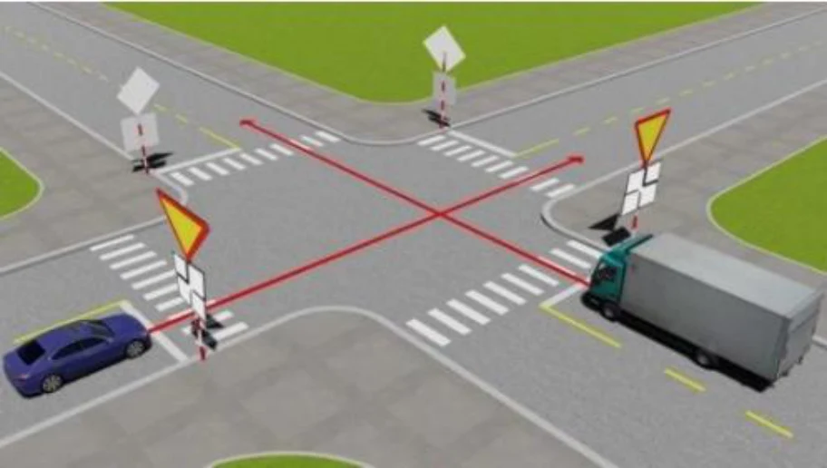
- Xe con.
- Xe tải.
Xem đáp án
A. Xe con.
Câu 498 Xe nào được quyền đi trước trong trường hợp này?
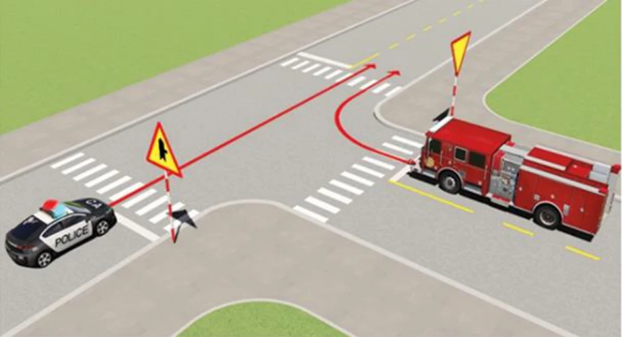
- Xe công an đi làm nhiệm vụ khẩn cấp.
- Xe chữa cháy đi làm nhiệm vụ chữa cháy.
Xem đáp án
B. Xe chữa cháy đi làm nhiệm vụ chữa cháy.
Câu 499 Theo tín hiệu đèn, xe nào được phép đi?
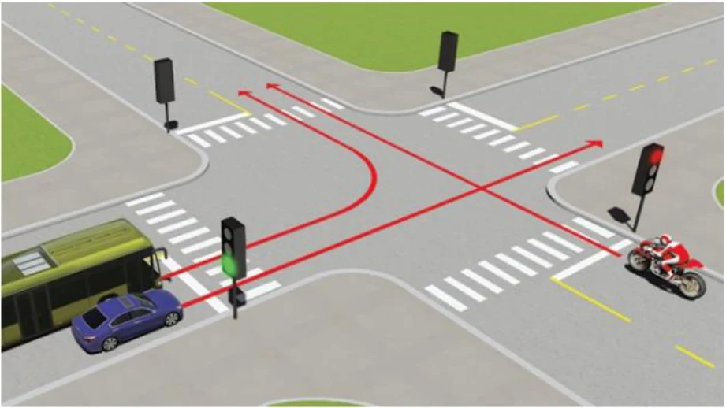
- Xe con và xe khách.
- Xe mô tô.
Xem đáp án
A. Xe con và xe khách.
Câu 500 Theo tín hiệu đèn, xe nào đi là đúng quy tắc giao thông?
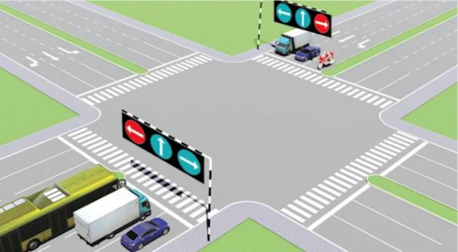
- Xe khách, xe mô tô.
- Xe con, xe tải.
- Xe tải, xe mô tô.
Xem đáp án
B. Xe con, xe tải.
Câu 501 Trong trường hợp này xe nào được quyền đi trước?
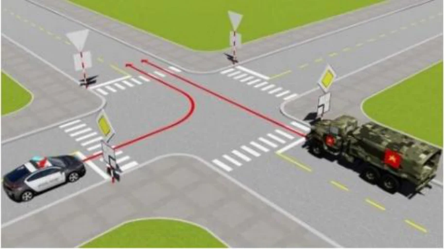
- Xe công an đi làm nhiệm vụ khẩn cấp.
- Xe quân sự đi làm nhiệm vụ khẩn cấp.
Xem đáp án
B. Xe quân sự đi làm nhiệm vụ khẩn cấp.
Câu 502 Theo tín hiệu đèn, xe tải đi theo hướng nào là đúng quy tắc giao thông?
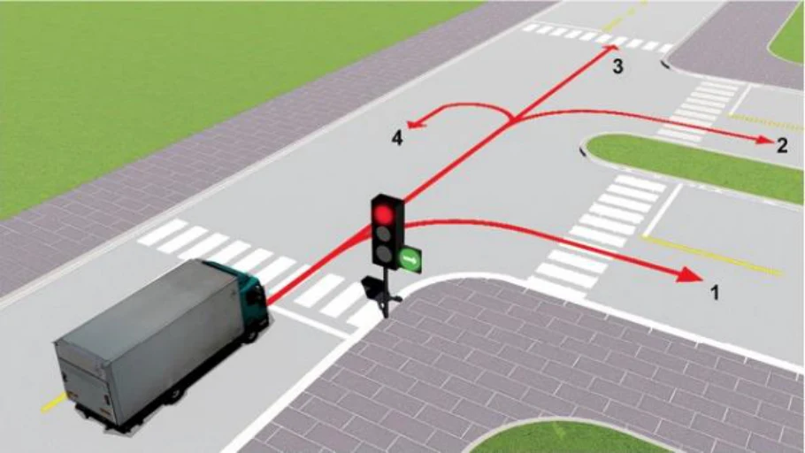
- Hướng 2, 3, 4.
- Chỉ hướng 1.
- Hướng 1 và 2.
- Hướng 3 và 4.
Xem đáp án
B. Chỉ hướng 1.
Câu 503 Các xe đi theo hướng mũi tên, những xe nào vi phạm quy tắc giao thông?
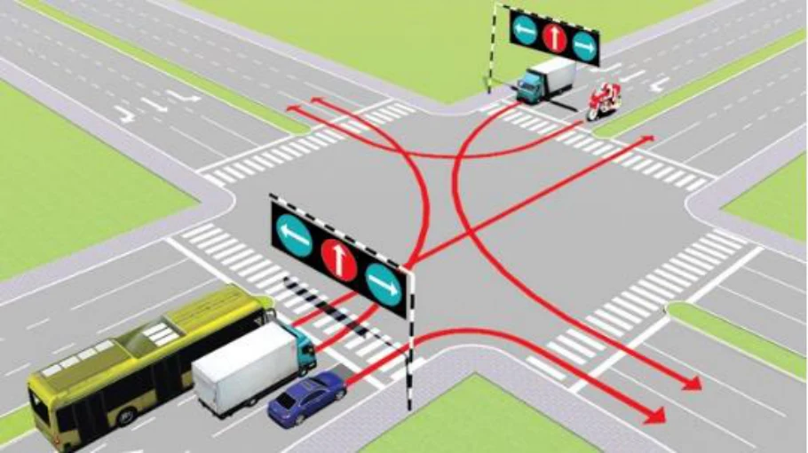
- Xe khách, xe tải, xe mô tô.
- Xe tải, xe con, xe mô tô.
- Xe khách, xe con, xe mô tô.
Xem đáp án
A. Xe khách, xe tải, xe mô tô.
Câu 504 Theo hướng mũi tên, thứ tự các xe đi như thế nào là đúng quy tắc giao thông?
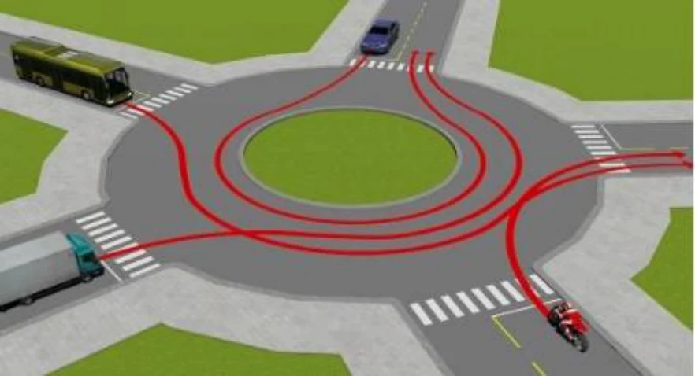
- Xe khách, xe tải, xe mô tô, xe con.
- Xe con, xe khách, xe tải, xe mô tô.
- Xe mô tô, xe tải, xe khách, xe con.
- Xe mô tô, xe tải, xe con, xe khách.
Xem đáp án
C. Xe mô tô, xe tải, xe khách, xe con.
Câu 505 Trong trường hợp này xe nào đỗ vi phạm quy tắc giao thông?
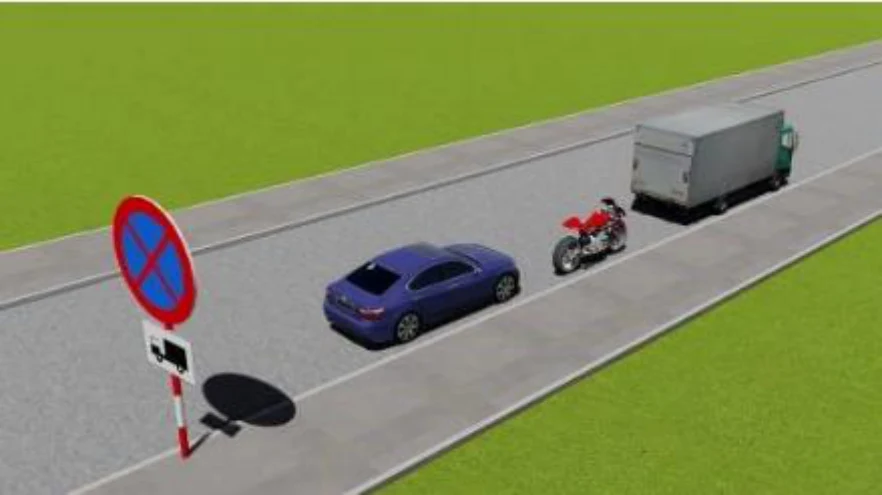
- Xe tải.
- Xe con và mô tô.
- Cả ba xe.
- Xe con và xe tải.
Xem đáp án
A. Xe tải.
Câu 506 Theo hướng mũi tên, xe nào được quyền đi trước?
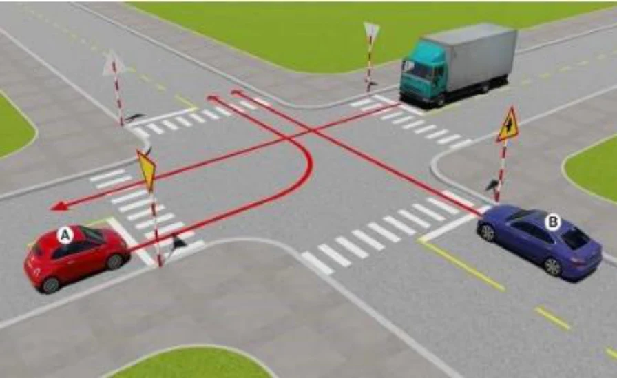
- Xe tải.
- Xe con (B).
- Xe con (A).
Xem đáp án
B. Xe con (B).
Câu 507 Theo hướng mũi tên, những hướng nào xe gắn máy được phép đi?
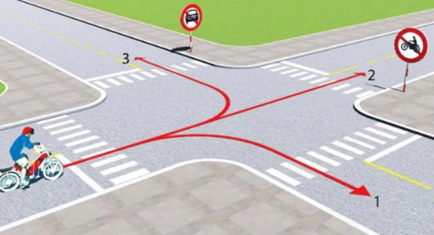
- Cả ba hướng.
- Chỉ hướng 1 và 3.
- Chỉ hướng 1.
Xem đáp án
A. Cả ba hướng.
Câu 508 Xe nào đỗ vi phạm quy tắc giao thông?
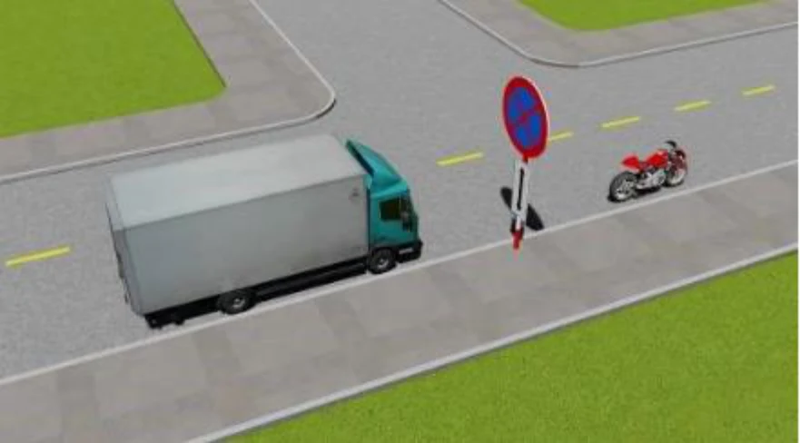
- Cả hai xe.
- Không xe nào vi phạm.
- Chỉ xe mô tô vi phạm.
- Chỉ xe tải vi phạm.
Xem đáp án
A. Cả hai xe.
Câu 509 Xe nào đỗ vi phạm quy tắc giao thông?
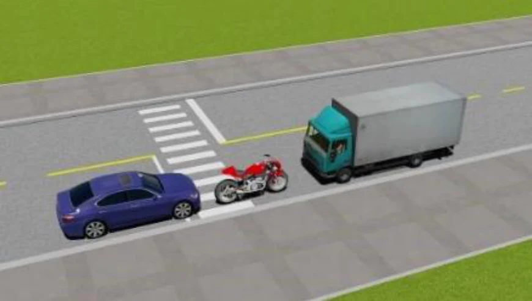
- Chỉ xe mô tô.
- Chỉ xe tải.
- Cả ba xe.
- Chỉ xe mô tô và xe tải.
Xem đáp án
C. Cả ba xe.
Câu 510 Xe tải kéo xe mô tô ba bánh như hình này có đúng quy tắc giao thông không?
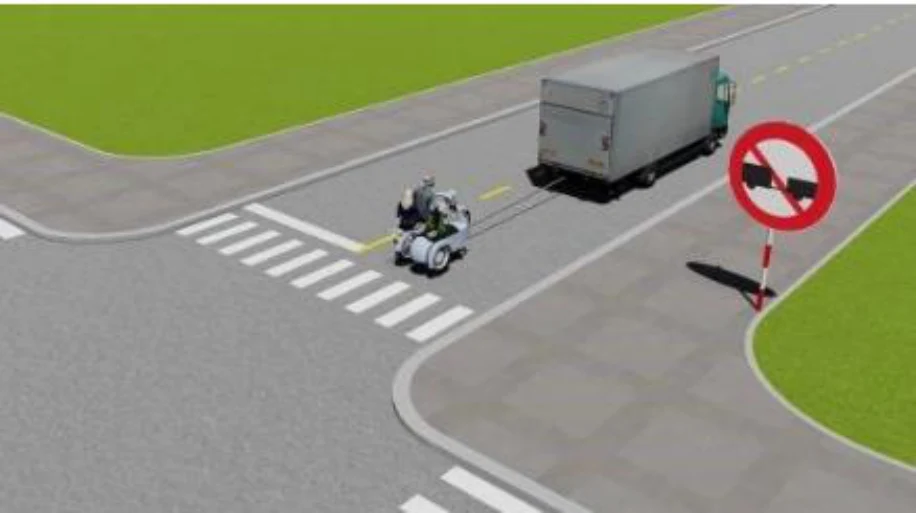
- Đúng.
- Không đúng.
Xem đáp án
B. Không đúng.
Câu 511 Theo hướng mũi tên, hướng nào xe không được phép đi?
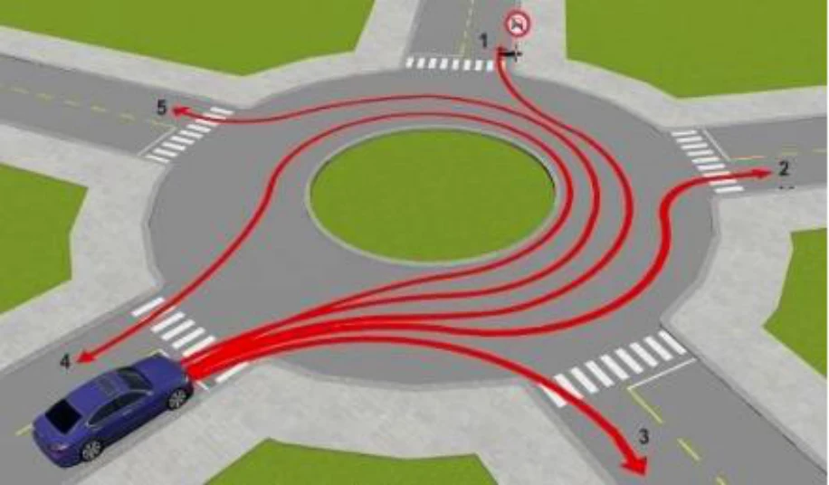
- Hướng 2 và 5.
- Chỉ hướng 1.
Xem đáp án
B. Chỉ hướng 1.
Câu 512 Theo hướng mũi tên, những hướng nào xe ô tô không được phép đi?
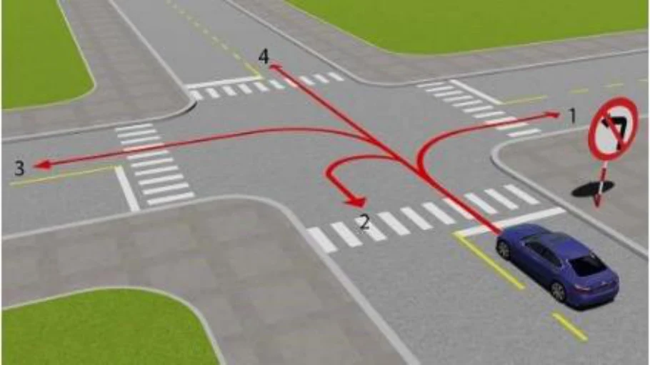
- Hướng 1 và 2.
- Hướng 3.
- Hướng 1 và 4.
- Hướng 2 và 3.
Xem đáp án
B. Hướng 3.
Câu 513 Xe nào vượt đúng quy tắc giao thông?
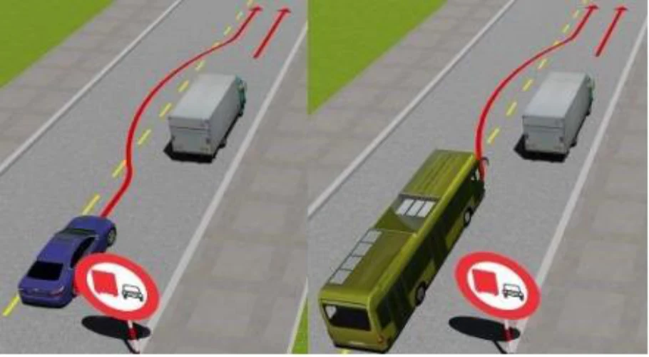
- Cả hai xe đều đúng.
- Xe con.
- Xe khách.
Xem đáp án
A. Cả hai xe đều đúng.
Câu 514 Theo hướng mũi tên, gặp biển hướng đi phải theo đặt trước ngã tư, những hướng nào xe được phép đi?
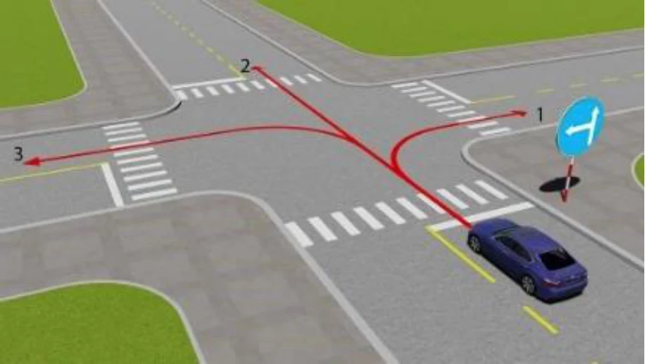
- Hướng 2 và 3.
- Hướng 1, 2 và 3.
- Hướng 1 và 3.
Xem đáp án
A. Hướng 2 và 3.
Câu 515 Xe kéo nhau như hình này có vi phạm quy tắc giao thông không?
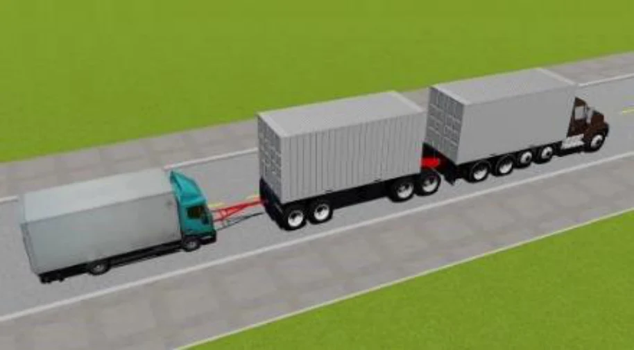
- Không.
- Vi phạm.
Xem đáp án
B. Vi phạm.
Câu 516 Xe nào phải nhường đường trong trường hợp này?
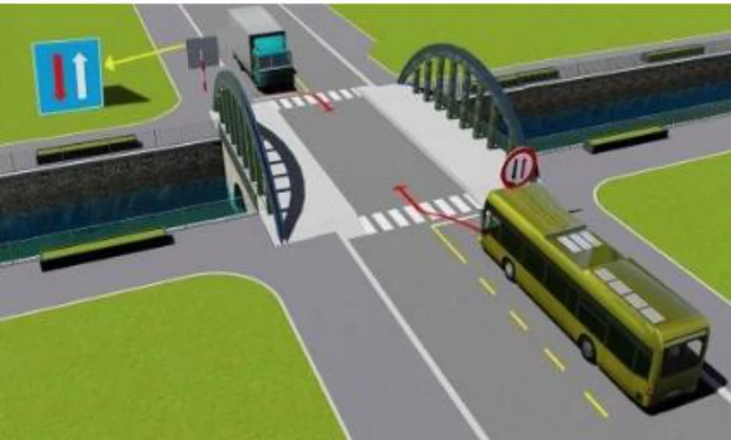
- Xe khách.
- Xe tải.
Xem đáp án
A. Xe khách.
Câu 517 Xe nào được quyền đi trước trong trường hợp này?
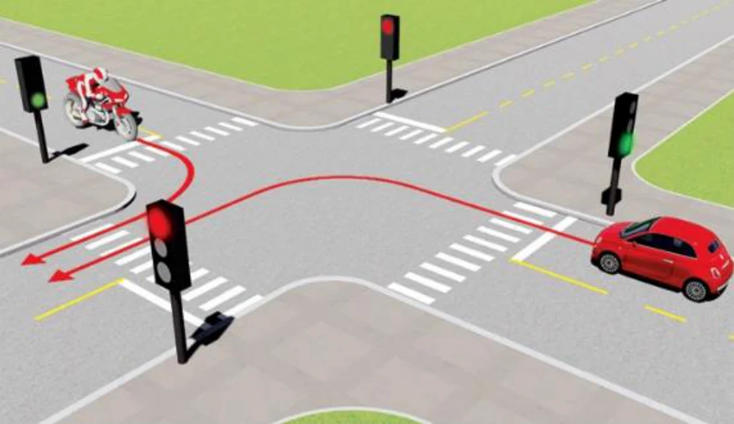
- Xe con.
- Xe mô tô.
Xem đáp án
B. Xe mô tô.
Câu 518 Xe kéo nhau trong trường hợp này đúng quy định không?
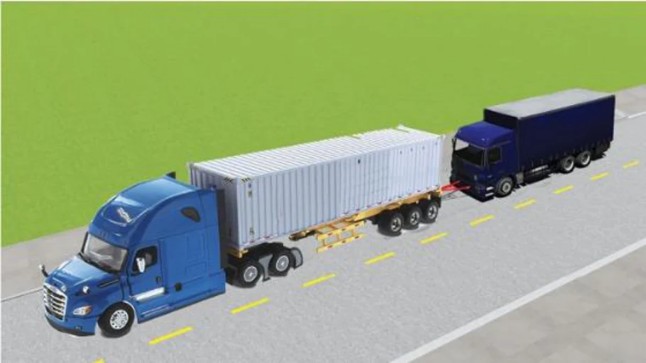
- Không đúng.
- Đúng.
Xem đáp án
A. Không đúng.
Câu 519 Theo hướng mũi tên, những hướng nào xe ô tô con được phép đi?
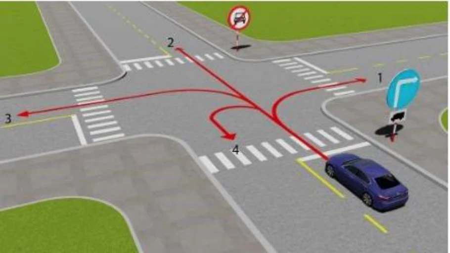
- Hướng 1.
- Hướng 1, 3 và 4.
- Hướng 2, 3 và 4.
- Cả bốn hướng.
Xem đáp án
B. Hướng 1, 3 và 4.
Câu 520 Theo hướng mũi tên, thứ tự các xe đi như thế nào là đúng quy tắc giao thông?
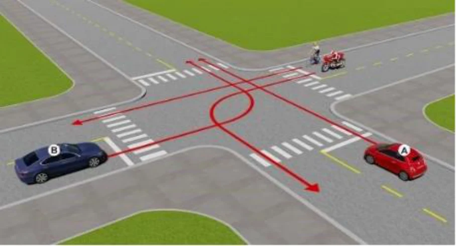
- Xe con (A), xe mô tô, xe con (B), xe đạp.
- Xe con (B), xe đạp, xe mô tô, xe con (A).
- Xe con (A), xe con (B), xe mô tô + xe đạp.
- Xe mô tô + xe đạp, xe con (A), xe con (B).
Xem đáp án
D. Xe mô tô + xe đạp, xe con (A), xe con (B).
Câu 521 Theo hướng mũi tên, những hướng nào xe tải được phép đi?
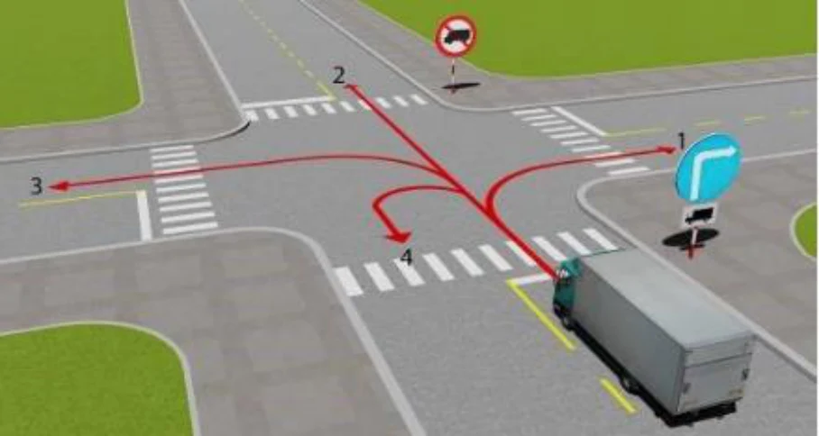
- Chỉ hướng 1.
- Hướng 1, 3 và 4.
- Hướng 1, 2 và 3.
- Cả bốn hướng.
Xem đáp án
A. Chỉ hướng 1.
Câu 522 Những hướng nào xe tải được phép đi?
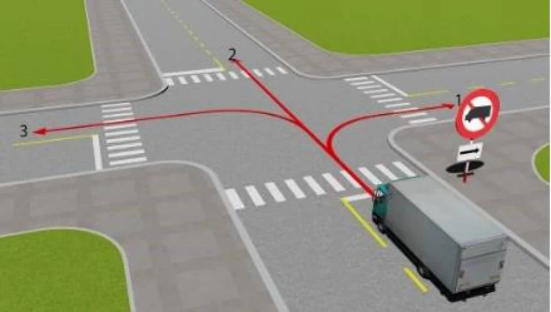
- Cả ba hướng.
- Hướng 2 và 3.
Xem đáp án
B. Hướng 2 và 3.
Câu 523 Những hướng nào xe ô tô tải được phép đi?
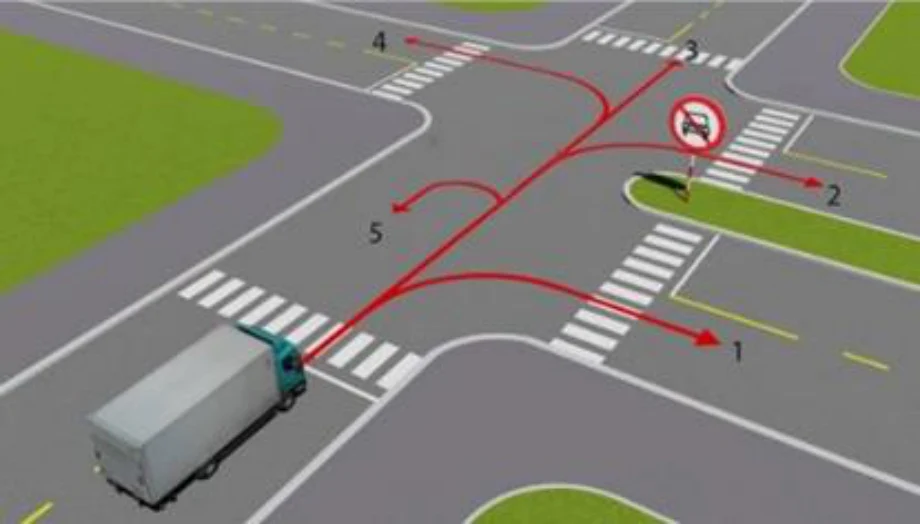
- Chỉ hướng 1.
- Hướng 1 và 4.
- Hướng 1 và 5.
- Hướng 1, 4 và 5.
Xem đáp án
C. Hướng 1 và 5.
Câu 524 Những hướng nào xe ô tô tải được phép đi?
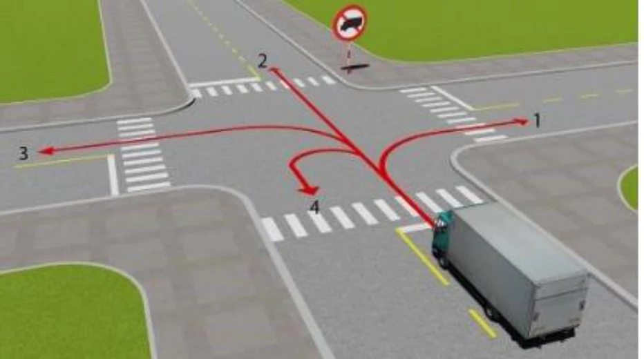
- Cả bốn hướng.
- Trừ hướng 2.
- Hướng 2, 3 và 4.
- Trừ hướng 4.
Xem đáp án
B. Trừ hướng 2.
Câu 525 Xe nào được quyền đi trước trong trường hợp này?
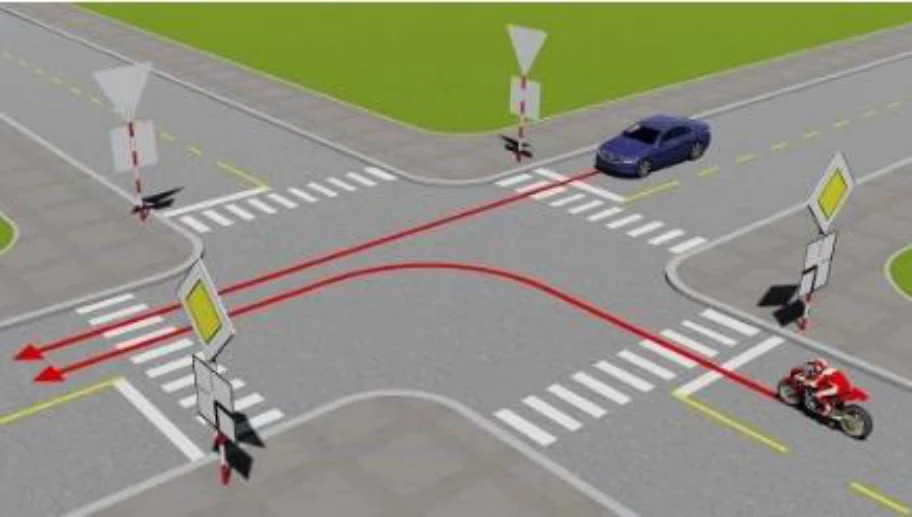
- Xe mô tô.
- Xe con.
Xem đáp án
A. Xe mô tô.
Câu 526 Xe ô tô con đi theo chiều mũi tên có vi phạm quy tắc giao thông không?
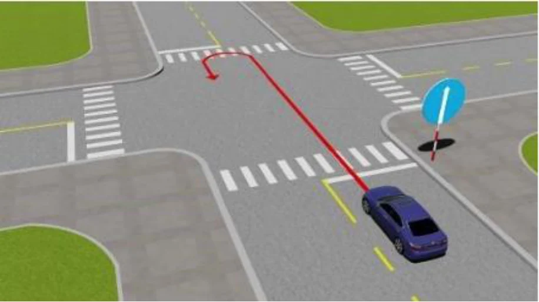
- Không vi phạm.
- Vi phạm.
Xem đáp án
B. Vi phạm.
Câu 527 Xe nào vi phạm quy tắc giao thông?
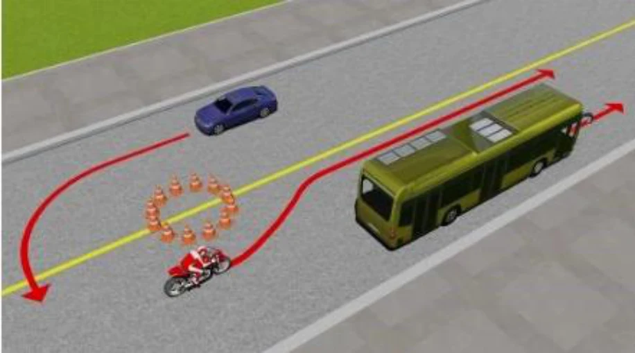
- Xe khách.
- Xe mô tô.
- Xe con.
- Xe con và xe mô tô.
Xem đáp án
C. Xe con.
Câu 528 Các xe đi như thế nào là đúng quy tắc giao thông?
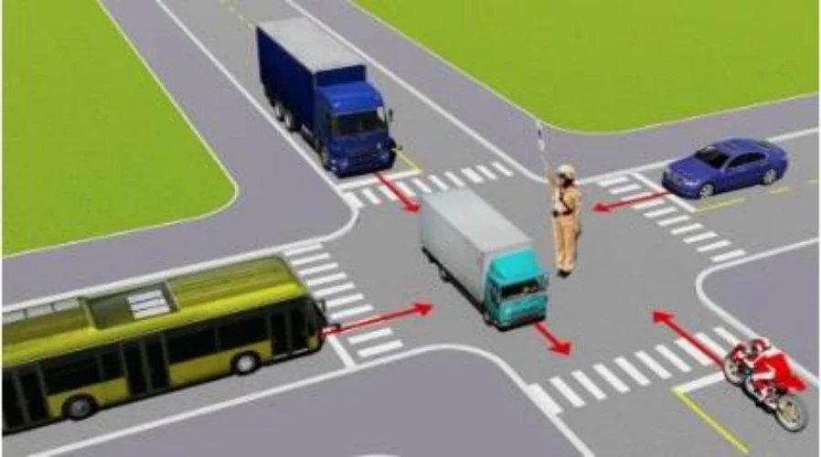
- Các xe ở phía tay phải và tay trái của người điều khiển được phép đi thẳng.
- Cho phép các xe ở mọi hướng được phép rẽ phải.
- Tất cả các xe phải dừng lại trước ngã tư, trừ những xe đã ở trong ngã tư được phép tiếp tục đi.
Xem đáp án
C. Tất cả các xe phải dừng lại trước ngã tư, trừ những xe đã ở trong ngã tư được phép tiếp tục đi.
Câu 529 Theo hướng mũi tên, xe nào được phép đi?
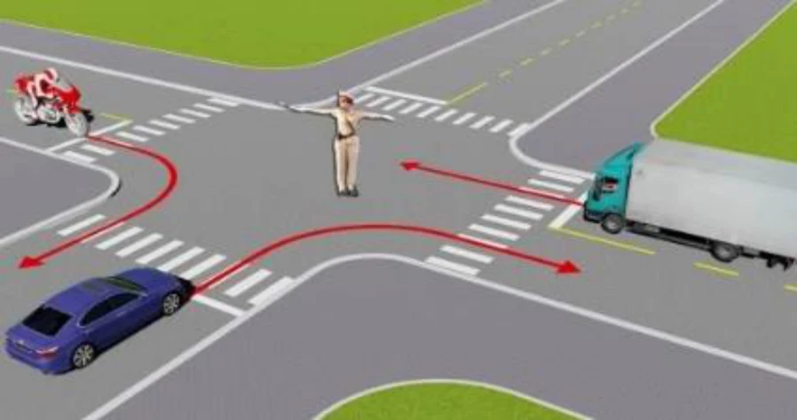
- Xe mô tô, xe con.
- Xe con, xe tải.
- Xe mô tô, xe tải.
- Cả ba xe.
Xem đáp án
C. Xe mô tô, xe tải.
Câu 530 Xe con vượt xe tải như trường hợp này có đúng không?
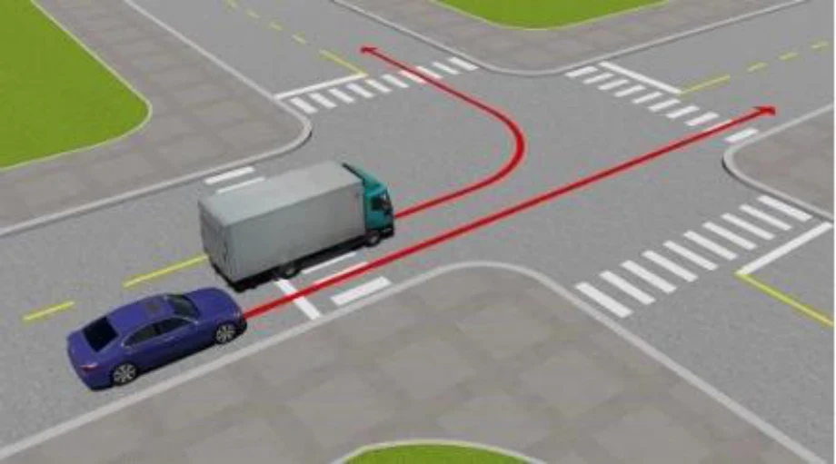
- Đúng.
- Không đúng.
Xem đáp án
A. Đúng.
Câu 531 Xe nào vượt đúng quy tắc giao thông?
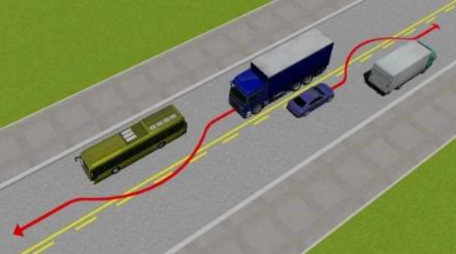
- Xe tải.
- Cả hai xe.
- Xe con.
Xem đáp án
C. Xe con.
Câu 532 Đi theo hướng mũi tên, xe nào vi phạm quy tắc giao thông?
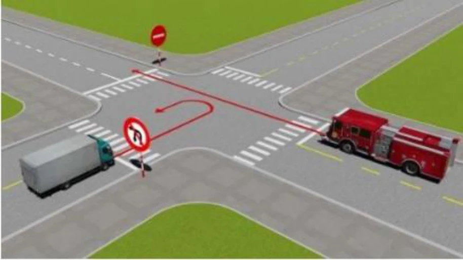
- Xe chữa cháy đi làm nhiệm vụ chữa cháy.
- Xe tải.
- Cả hai xe.
Xem đáp án
B. Xe tải.
Câu 533 Thứ tự các xe đi như thế nào là đúng quy tắc giao thông?
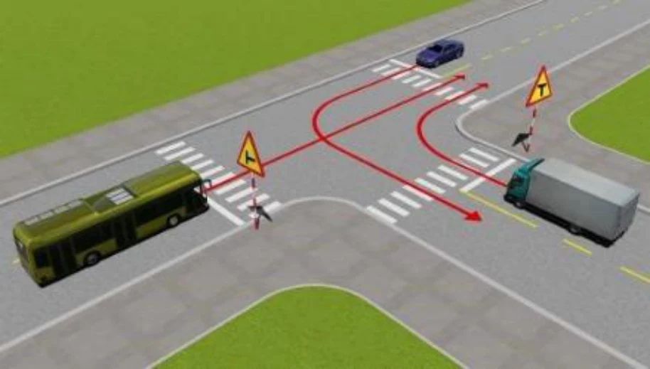
- Xe khách, xe tải, xe con.
- Xe con, xe tải, xe khách.
- Xe tải, xe khách, xe con.
Xem đáp án
C. Xe tải, xe khách, xe con.
Câu 534 Theo hướng mũi tên, thứ tự các xe đi như thế nào là đúng quy tắc giao thông?
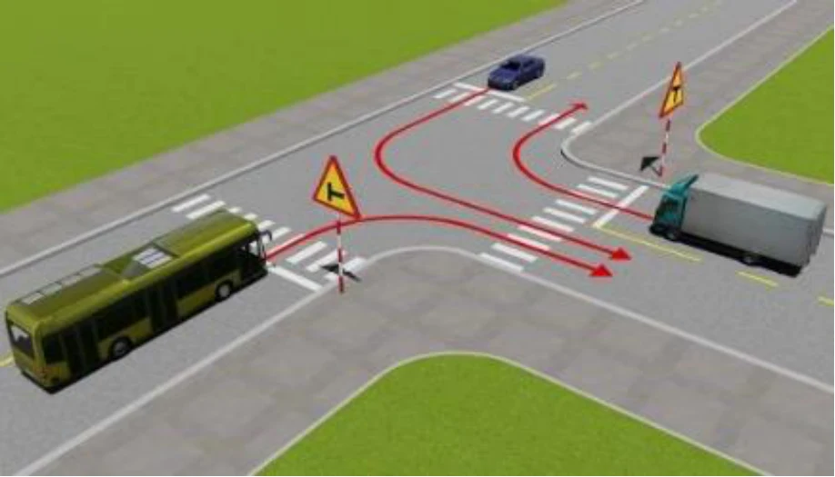
- Xe khách và xe tải, xe con.
- Xe tải, xe khách, xe con.
- Xe con, xe khách, xe tải.
Xem đáp án
A. Xe khách và xe tải, xe con.
Câu 535 Những hướng nào xe ô tô tải được phép đi?
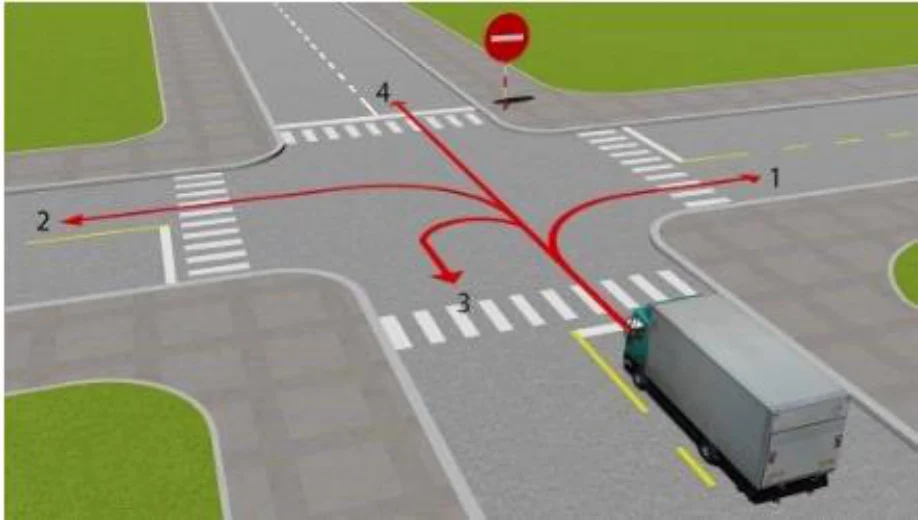
- Cả bốn hướng.
- Chỉ hướng 1 và 2.
- Trừ hướng 4.
Xem đáp án
C. Trừ hướng 4.
Câu 536 Theo hướng mũi tên, thứ tự các xe đi như thế nào là đúng?
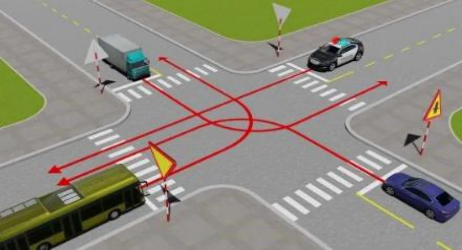
- Xe công an đi làm nhiệm vụ khẩn cấp, xe con, xe tải, xe khách.
- Xe con, xe khách và xe công an đi làm nhiệm vụ khẩn cấp, xe tải.
- Xe công an đi làm nhiệm vụ khẩn cấp, xe con, xe khách, xe tải.
- Xe con, xe tải, xe khách, xe công an đi làm nhiệm vụ khẩn cấp.
Xem đáp án
A. Xe công an đi làm nhiệm vụ khẩn cấp, xe con, xe tải, xe khách.
Câu 537 Những hướng nào ô tô tải được phép đi?
- Cả bốn hướng.
- Hướng 1, 2 và 3.
- Hướng 1 và 4.
- Hướng 1, 3 và 4.
Xem đáp án
D. Hướng 1, 3 và 4.
Câu 538 Trong hình dưới đây, xe nào chấp hành đúng quy tắc giao thông?
- Chỉ xe khách, xe mô tô.
- Tất cả các loại xe trên.
- Không xe nào chấp hành đúng quy tắc giao thông.
Xem đáp án
B. Tất cả các loại xe trên.
Câu 539 Theo hướng mũi tên, những hướng nào xe mô tô được phép đi?
- Cả ba hướng.
- Hướng 1 và 2.
- Hướng 1 và 3.
- Hướng 2 và 3.
Xem đáp án
C. Hướng 1 và 3.
Câu 540 Trong trường hợp này, thứ tự xe đi như thế nào là đúng quy tắc giao thông?
- Xe công an đi làm nhiệm vụ khẩn cấp, xe quân sự đi làm nhiệm vụ khẩn cấp, xe con + xe mô tô.
- Xe quân sự đi làm nhiệm vụ khẩn cấp, xe công an đi làm nhiệm vụ khẩn cấp, xe con + xe mô tô.
- Xe mô tô + xe con, xe quân sự đi làm nhiệm vụ khẩn cấp, xe công an đi làm nhiệm vụ khẩn cấp.
Xem đáp án
B. Xe quân sự đi làm nhiệm vụ khẩn cấp, xe công an đi làm nhiệm vụ khẩn cấp, xe con + xe mô tô.
Câu 541 Xe nào phải nhường đường là đúng quy tắc giao thông?
- Xe A.
- Xe B.
Xem đáp án
A. Xe A.
Câu 542 Xe con quay đầu đi ngược lại như hình vẽ dưới có vi phạm quy tắc giao thông không?
- Không vi phạm.
- Vi phạm.
Xem đáp án
B. Vi phạm.
Câu 543 Trong hình dưới, những xe nào vi phạm quy tắc giao thông?
- Xe con (E), xe mô tô (C).
- Xe tải (B), xe mô tô (D).
- Xe khách (A), xe mô tô (C).
- Xe khách (A), xe mô tô (D).
Xem đáp án
A. Xe con (E), xe mô tô (C).
Câu 544 Để điều khiển cho xe đi thẳng, người lái xe phải làm gì là đúng quy tắc giao thông?
- Nhường xe con rẽ trái trước.
- Đi thẳng không nhường.
Xem đáp án
A. Nhường xe con rẽ trái trước.
Câu 545 Người lái xe điều khiển xe đi theo hướng nào là đúng quy tắc giao thông?
- Chỉ hướng 2.
- Hướng 1 và 2.
- Tất cả các hướng trừ hướng 3.
- Tất cả các hướng trừ hướng 4.
Xem đáp án
B. Hướng 1 và 2.
Câu 546 Xe nào phải nhường đường là đúng quy tắc giao thông?
- Xe con (A).
- Xe con (B).
Xem đáp án
B. Xe con (B).
Câu 547 Người lái xe điều khiển xe rẽ trái như thế nào là đúng quy tắc giao thông?
- Rẽ trái ngay trước xe buýt.
- Rẽ trái trước xe tải.
- Nhường đường cho xe buýt và xe tải.
Xem đáp án
C. Nhường đường cho xe buýt và xe tải.
Câu 548 Trong hình dưới, những xe nào vi phạm quy tắc giao thông?
- Xe con (B), xe mô tô (C).
- Xe con (A), xe mô tô (C).
- Xe con (E), xe mô tô (D).
- Tất cả các loại xe trên.
Xem đáp án
C. Xe con (E), xe mô tô (D).
Câu 549 Xe nào đi trước là đúng quy tắc giao thông?
- Xe của bạn.
- Xe tải.
Xem đáp án
B. Xe tải.
Câu 550 Người lái xe có thể quay đầu xe như thế nào là đúng quy tắc giao thông?
- Quay đầu theo hướng A.
- Quay đầu theo hướng B.
- Cấm quay đầu.
Xem đáp án
A. Quay đầu theo hướng A.
Câu 551 Thứ tự các xe đi như thế nào là đúng quy tắc giao thông?
- Xe con và xe tải, xe của bạn.
- Xe của bạn, xe tải, xe con.
- Xe của bạn và xe con, xe tải.
- Xe của bạn, xe tải + xe con.
Xem đáp án
C. Xe của bạn và xe con, xe tải.
Câu 552 Khi muốn vượt xe tải, người lái xe phải làm gì là đúng quy tắc giao thông?
- Tăng tốc cho xe chạy vượt qua.
- Bật tín hiệu báo hiệu bằng đèn hoặc còi, khi đủ điều kiện an toàn, tăng tốc cho xe chạy vượt qua.
- Đánh lái sang làn bên trái và tăng tốc cho xe chạy vượt qua.
Xem đáp án
B. Bật tín hiệu báo hiệu bằng đèn hoặc còi, khi đủ điều kiện an toàn, tăng tốc cho xe chạy vượt qua.
Câu 553 Theo tín hiệu đèn, xe nào phải dừng lại là đúng quy tắc giao thông?
- Xe khách, xe mô tô.
- Xe tải, xe mô tô.
- Xe con, xe tải.
Xem đáp án
C. Xe con, xe tải.
Câu 554 Trong hình dưới, những xe nào chấp hành quy tắc giao thông?
- Xe tải ( D), xe con (B).
- Xe con (A), xe con (C), xe con (E), xe buýt (G).
- Xe con (A), xe con (B), xe tải (D).
Xem đáp án
B. Xe con (A), xe con (C), xe con (E), xe buýt (G).
Câu 555 Người lái xe có được phép vượt xe tải để đi thẳng trong trường hợp này không?
- Được vượt.
- Cấm vượt.
Xem đáp án
B. Cấm vượt.
Câu 556 Bạn có được phép vượt xe mô tô phía trước không?
- Cho phép.
- Không được vượt.
Xem đáp án
B. Không được vượt.
Câu 557 Người lái xe dừng tại vị trí nào là đúng quy tắc giao thông?
- Vị trí A và B.
- Vị trí A và C.
- Vị trí B và C.
- Cả ba vị trí A, B, C.
Xem đáp án
C. Vị trí B và C.
Câu 558 Bạn được dừng xe ở vị trí nào trong tình huống này?
- Được phép dừng ở vị trí A.
- Được phép dừng ở vị trí B.
- Được phép dừng ở vị trí A và B.
- Không được dừng.
Xem đáp án
D. Không được dừng.
Câu 559 Theo tín hiệu đèn của xe cơ giới, xe nào vi phạm quy tắc giao thông?
- Xe mô tô.
- Xe ô tô con.
- Không xe nào vi phạm.
- Cả hai xe.
Xem đáp án
D. Cả hai xe.
Câu 560 Các xe đi theo hướng mũi tên, xe nào vi phạm quy tắc giao thông?
- Xe con.
- Xe tải.
- Xe con, xe tải.
Xem đáp án
B. Xe tải.
Câu 561 Các xe đi theo hướng mũi tên, những xe nào vi phạm quy tắc giao thông?
- Xe tải, xe con.
- Xe khách, xe con.
- Xe khách, xe tải.
Xem đáp án
C. Xe khách, xe tải.
Câu 562 Các xe đi theo hướng mũi tên, xe nào vi phạm quy tắc giao thông?
- Xe con, xe tải, xe khách.
- Xe tải, xe khách, xe mô tô.
- Xe khách, xe mô tô, xe con.
- Cả bốn xe.
Xem đáp án
B. Xe tải, xe khách, xe mô tô.
Câu 563 Các xe đi theo hướng mũi tên, xe nào vi phạm quy tắc giao thông?
- Xe khách, xe tải.
- Xe khách, xe con.
- Xe con, xe tải.
- Xe khách, xe tải, xe con.
Xem đáp án
A. Xe khách, xe tải.
Câu 564 Trong tình huống dưới đây, để tránh xe phía trước bị hỏng đột xuất trên đường, người lái xe phải làm gì?
- Đánh lái sang trái cho xe vượt qua.
- Quan sát phía trước, phía sau, khi đủ điều kiện an toàn, bật tín hiệu bằng đèn hoặc còi rồi cho xe chạy vượt qua.
- Cấm vượt.
Xem đáp án
B. Quan sát phía trước, phía sau, khi đủ điều kiện an toàn, bật tín hiệu bằng đèn hoặc còi rồi cho xe chạy vượt qua.
Câu 565 Các xe đi theo hướng mũi tên, xe nào chấp hành đúng quy tắc giao thông?
- Xe tải, xe mô tô.
- Xe khách, xe mô tô.
- Xe tải, xe con.
- Xe mô tô, xe con.
Xem đáp án
B. Xe khách, xe mô tô.
Câu 566 Trong hình dưới, những xe nào vi phạm quy tắc giao thông?
- Xe con (A), xe con (B), xe tải (D).
- Xe tải (D), xe con (E), xe buýt (G).
- Xe tải ( D), xe con (B).
- Xe con (B), xe con (C).
Xem đáp án
C. Xe tải ( D), xe con (B).
Câu 567 Các xe đi theo thứ tự nào là đúng quy tắc giao thông đường bộ?
- Xe của bạn, xe mô tô, xe con.
- Xe con, xe của bạn, xe mô tô.
- Xe mô tô, xe con, xe của bạn.
Xem đáp án
C. Xe mô tô, xe con, xe của bạn.
Câu 568 Các xe đi theo thứ tự nào là đúng quy tắc giao thông đường bộ?
- Xe của bạn, xe mô tô, xe con.
- Xe con, xe của bạn, xe mô tô.
- Xe mô tô, xe con, xe của bạn.
Xem đáp án
B. Xe con, xe của bạn, xe mô tô.
Câu 569 Xe nào phải dừng lại trong trường hợp này?
- Xe con.
- Xe của bạn.
- Cả hai xe.
Xem đáp án
A. Xe con.
Câu 570 Xe của bạn được đi theo hướng nào trong trường hợp này?
- Đi thẳng, rẽ trái.
- Đi thẳng, rẽ phải.
- Rẽ trái.
- Đi thẳng, rẽ phải, rẽ trái.
Xem đáp án
A. Đi thẳng, rẽ trái.
Câu 571 Xe của bạn được đi theo hướng nào trong trường hợp này?
- Chuyển sang làn đường bên phải và rẽ phải.
- Dừng lại trước vạch dừng và rẽ phải khi đèn xanh.
- Dừng lại trước vạch dừng và đi thẳng hoặc rẽ trái khi đèn xanh.
Xem đáp án
C. Dừng lại trước vạch dừng và đi thẳng hoặc rẽ trái khi đèn xanh.
Câu 572 Bạn xử lý như thế nào trong trường hợp này?
- Tăng tốc độ, rẽ phải trước xe tải và xe đạp.
- Giảm tốc độ, rẽ phải sau xe tải và xe đạp.
- Tăng tốc độ, rẽ phải trước xe đạp.
Xem đáp án
B. Giảm tốc độ, rẽ phải sau xe tải và xe đạp.
Câu 573 Bạn xử lý như thế nào trong trường hợp này?
- Tăng tốc độ, rẽ phải trước xe con màu xanh phía trước và người đi bộ.
- Giảm tốc độ, để người đi bộ qua đường và rẽ phải trước xe con màu xanh.
- Giảm tốc độ, để người đi bộ qua đường và rẽ phải sau xe con màu xanh.
Xem đáp án
C. Giảm tốc độ, để người đi bộ qua đường và rẽ phải sau xe con màu xanh.
Câu 574 Bạn xử lý như thế nào trong trường hợp này?
- Nhường đường cho xe khách và đi trước xe đạp.
- Nhường đường cho xe đạp và đi trước xe khách.
- Nhường đường cho xe đạp và xe khách.
Xem đáp án
C. Nhường đường cho xe đạp và xe khách.
Câu 575 Xe nào phải nhường đường trong trường hợp này?
- Xe con.
- Xe tải.
- Xe của bạn.
Xem đáp án
B. Xe tải.
Câu 576 Xe nào phải nhường đường trong trường hợp này?
- Xe đi ngược chiều.
- Xe của bạn.
Xem đáp án
B. Xe của bạn.
Câu 577 Bạn xử lý như thế nào khi lái xe ô tô vượt qua đoàn người đi xe đạp có tổ chức?
- Tăng tốc độ, chuyển sang làn đường bên trái để vượt.
- Không được vượt những người đi xe đạp.
Xem đáp án
B. Không được vượt những người đi xe đạp.
Câu 578 Phía trước có một xe đang lùi vào nơi đỗ, xe con phía trước đang chuyển sang làn đường bên trái, bạn xử lý như thế nào trong trường hợp này?
- Nếu phía sau không có xe xin vượt, chuyển sang làn đường bên trái.
- Nếu phía sau có xe xin vượt, thì giảm tốc độ, ở lại làn đường, dừng lại khi cần thiết.
- Tăng tốc độ trên làn đường của mình và vượt xe con.
- Ý 1 và ý 2.
Xem đáp án
D. Ý 1 và ý 2.
Câu 579 Bạn xử lý như thế nào khi xe phía trước đang lùi ra khỏi nơi đỗ?
- Chuyển sang nửa đường bên trái để đi tiếp.
- Bấm còi, nháy đèn báo hiệu và đi tiếp.
- Giảm tốc độ, dừng lại nhường đường.
Xem đáp án
C. Giảm tốc độ, dừng lại nhường đường.
Câu 580 Phía trước có một xe màu xanh đang vượt xe màu vàng trên làn đường của bạn, bạn xử lý như thế nào trong trường hợp này?
- Phanh xe giảm tốc độ và đi sát lề đường bên phải.
- Bấm còi, nháy đèn báo hiệu, giữ nguyên tốc độ và đi tiếp.
- Phanh xe giảm tốc độ và đi sát vào lề đường bên trái.
Xem đáp án
A. Phanh xe giảm tốc độ và đi sát lề đường bên phải.
Câu 581 Xe tải phía trước có tín hiệu xin chuyển làn đường, bạn xử lý như thế nào trong trường hợp này?
- Bật tín hiệu xin chuyển làn đường sang trái để vượt xe tải.
- Phanh xe giảm tốc độ chờ xe tải phía trước chuyển làn đường.
- Bấm còi báo hiệu và vượt qua xe tải trên làn đường của mình.
Xem đáp án
B. Phanh xe giảm tốc độ chờ xe tải phía trước chuyển làn đường.
Câu 582 Bạn xử lý như thế nào trong trường hợp này?
- Tăng tốc độ và đi thẳng qua ngã tư.
- Dừng xe trước vạch dừng.
- Giảm tốc độ và đi thẳng qua ngã tư.
Xem đáp án
C. Giảm tốc độ và đi thẳng qua ngã tư.
Câu 583 Các xe đi theo thứ tự nào là đúng quy tắc giao thông đường bộ?
- Xe của bạn, xe mô tô, xe đạp.
- Xe mô tô, xe đạp, xe của bạn.
- Xe đạp, xe mô tô, xe của bạn.
Xem đáp án
C. Xe đạp, xe mô tô, xe của bạn.
Câu 584 Các xe đi theo thứ tự nào là đúng quy tắc giao thông đường bộ?
- Xe của bạn, xe tải, xe con.
- Xe con, xe tải, xe của bạn.
- Xe tải, xe của bạn, xe con.
- Xe của bạn, xe con, xe tải.
Xem đáp án
D. Xe của bạn, xe con, xe tải.
Câu 585 Xe nào phải nhường đường trong trường hợp này?
- Xe của bạn.
- Xe con.
Xem đáp án
A. Xe của bạn.
Câu 586 Xe nào phải nhường đường trong trường hợp này?
- Xe con.
- Xe của bạn.
Xem đáp án
B. Xe của bạn.
Câu 587 Bạn xử lý như thế nào trong trường hợp này?
- Tăng tốc độ, đi qua vạch người đi bộ sang đường, để người đi bộ sang đường sau.
- Giảm tốc độ, đi qua vạch người đi bộ sang đường, để người đi bộ sang đường sau.
- Giảm tốc độ, để người đi bộ sang đường trước, sau đó cho xe đi qua vạch người đi bộ sang đường.
Xem đáp án
C. Giảm tốc độ, để người đi bộ sang đường trước, sau đó cho xe đi qua vạch người đi bộ sang đường.
Câu 588 Xe nào được đi trước trong trường hợp này?
- Xe con.
- Xe của bạn.
Xem đáp án
B. Xe của bạn.
Câu 589 Các xe đi theo thứ tự nào là đúng quy tắc giao thông đường bộ?
- Xe con, xe tải, xe của bạn.
- Xe tải, xe con, xe của bạn.
- Xe tải, xe của bạn, xe con.
Xem đáp án
B. Xe tải, xe con, xe của bạn.
Câu 590 Bạn xử lý như thế nào trong trường hợp này?
- Tăng tốc độ cho xe lấn sang phần đường bên trái.
- Giảm tốc độ cho xe lấn sang phần đường bên trái.
- Giảm tốc độ cho xe đi sát phần đường bên phải.
Xem đáp án
C. Giảm tốc độ cho xe đi sát phần đường bên phải.
Câu 591 Xe nào được đi trước trong trường hợp này?
- Xe tải.
- Xe của bạn.
Xem đáp án
A. Xe tải.
Câu 592 Xe nào dừng đúng theo quy tắc giao thông?
- Xe con.
- Xe mô tô.
- Cả 2 xe đều đúng.
Xem đáp án
A. Xe con.
Câu 593 Các xe đi theo thứ tự nào là đúng quy tắc giao thông đường bộ?
- Xe tải, xe đạp, xe của bạn.
- Xe của bạn, xe đạp, xe tải.
- Xe của bạn, xe tải, xe đạp.
Xem đáp án
C. Xe của bạn, xe tải, xe đạp.
Câu 594 Để điều khiển xe rẽ trái, bạn chọn hướng đi nào dưới đây?
- Hướng 1.
- Hướng 2.
- Cả hai hướng đều được.
Xem đáp án
A. Hướng 1.
Câu 595 Khi gặp xe ngược chiều bật đèn pha trong tình huống dưới dây, bạn xử lý như thế nào?
- Bật đèn chiếu xa, tăng tốc độ vượt xe cùng chiều.
- Giữ nguyên đèn chiếu gần, giảm tốc độ, đi sau xe phía trước.
- Giữ nguyên đèn chiếu gần, tăng tốc độ vượt xe cùng chiều.
Xem đáp án
B. Giữ nguyên đèn chiếu gần, giảm tốc độ, đi sau xe phía trước.
Câu 596 Xe của bạn đang di chuyển gần đến khu vực giao cắt với đường sắt, khi rào chắn đang dịch chuyển, bạn điều khiển xe như thế nào là đúng quy tắc giao thông?
- Quan sát nếu thấy không có tàu thì tăng tốc cho xe vượt qua đường sắt.
- Dừng lại trước rào chắn một khoảng cách an toàn.
- Ra tín hiệu, yêu cầu người gác chắn tàu kéo chậm barie để xe bạn qua.
Xem đáp án
B. Dừng lại trước rào chắn một khoảng cách an toàn.
Câu 597 Trong tình huống dưới đây, xe con màu đỏ nhập làn đường cao tốc theo hướng mũi tên là đúng hay sai?
- Đúng.
- Sai.
Xem đáp án
B. Sai.
Câu 598 Trong tình huống dưới đây, xe con màu đỏ có được phép vượt khi xe con màu xanh đang vượt xe tải hay không?
- Được vượt.
- Không được vượt.
Xem đáp án
B. Không được vượt.
Câu 599 Trong tình huống dưới đây, xe con màu vàng vượt xe con màu đỏ là đúng quy tắc giao thông hay không?
- Đúng.
- Không đúng.
Xem đáp án
A. Đúng.
Câu 600 Trong tình huống dưới đây, xe đầu kéo kéo rơ moóc (xe container) đang rẽ phải, xe con màu xanh và xe máy phía sau xe container đi như thế nào để bảo đảm an toàn?
- Vượt về phía bên phải để đi tiếp.
- Giảm tốc độ chờ xe container rẽ xong rồi tiếp tục đi.
- Vượt về phía bên trái để đi tiếp.
Xem đáp án
B. Giảm tốc độ chờ xe container rẽ xong rồi tiếp tục đi.